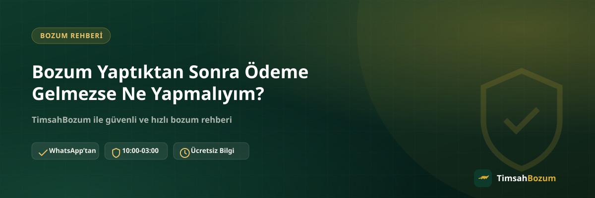

Kod veya bakiyeni paylaştın, oranı teyit ettin ve şimdi ödemenin gelmesini bekliyorsun. Ama beklediğin süre geçtiği hâlde ödeme hesabına ulaşmadıysa içine bir kuşku düşmesi normal. İyi haber şu ki bu durumun çoğu zaman basit ve çözülebilir bir sebebi var. Bu yazıda ödeme sürecinin nasıl işlediğini, gecikmenin olası nedenlerini ve ödemeni beklerken atman gereken adımları anlatıyoruz.
Bozum Sonrası Ödeme Süreci Nasıl İşliyor?
Bilgini paylaşıp oranı teyit ettikten sonra ödeme yöntemi WhatsApp üzerinden karşılıklı görüşülerek belirlenir. Bu adım, işlemin en kritik noktasıdır; çünkü ödemenin hangi hesaba, hangi yöntemle yapılacağı burada netleşir. Ödeme yöntemi belirlendikten sonra süreç bu yöntem üzerinden ilerler ve tamamlandığında sana bilgi verilir.
Ödemem Ne Kadar Sürede Ulaşır?
Kesin bir süre vermek yerine şunu söylemek daha doğru: işlem çalışma saatleri (10:00-03:00) içinde başlatıldığında süreç genelde hızlı ilerler. Güncel süreyle ilgili net bilgiyi işlemi başlatmadan önce WhatsApp'tan sorman, beklentini doğru şekilde ayarlamanı sağlar. Bu şekilde "ne zaman gelir" sorusunun cevabını tahmin etmek yerine doğrudan öğrenmiş olursun.
Ödeme Neden Gecikebilir?
Gecikmenin birkaç olası sebebi var: mesajının çalışma saatleri dışında gönderilmiş olması, paylaşılan bilgide bir eksiklik ya da netleşmemiş bir ödeme detayı, ya da yoğun saatlerde sıra bekleniyor olması. Bunların hiçbiri işlemin iptal olduğu anlamına gelmez, sadece sürecin normalden biraz uzun sürdüğünü gösterir.
Ödeme Gelmediğinde İlk Yapman Gereken Nedir?
Öncelikle panik yapıp art arda mesaj göndermek yerine, aynı WhatsApp hattından (+90 543 887 21 71) sakin bir şekilde işleminin durumunu sor. Konuşma geçmişini elinde tutmak, hangi kod veya bakiyeyi hangi oranla paylaştığını hatırlatman açısından işini kolaylaştırır. Karşı taraf sana süreç hakkında güncel bilgi verecektir.
Gecikme Dolandırıcılık Anlamına mı Gelir?
Tek başına bir gecikme dolandırıcılık göstergesi değildir. Asıl dikkat etmen gereken, işlemi resmi WhatsApp hattı dışında bir numaradan veya platformdan (Instagram DM, farklı bir telefon numarası gibi) yürütüp yürütmediğindir. İşlemini her zaman sitede yayınlanan resmi hat üzerinden takip ediyor olman, kendi güvenliğin açısından en önemli kontrol noktasıdır.
Hangi Bilgiler Takip Sürecini Hızlandırır?
İşlemini sorarken hangi hizmeti bozdurduğunu (Razer Gold, Pokus, Paycell, mobil ödeme gibi), ne zaman bilgini paylaştığını ve teyit edilen oranı hatırlatman, karşı tarafın durumunu daha hızlı kontrol etmesini sağlar. Bu bilgileri tek mesajda toplu vermek, "hangi işlemden bahsediyorsun" gibi ek bir soruyla zaman kaybetmeni önler.
Örneğin mobil ödeme bozdurma ya da Paycell bozdurma işlemi yaptıysan, hangi tutarı ne zaman bildirdiğini belirtmen süreci netleştirir.
Kod Tabanlı ve Bakiye Tabanlı Hizmetlerde Ödeme Takibi Farklı mı?
Razer Gold ve iTunes gibi kod tabanlı hizmetlerde tek bir kod paylaşılıp tam değeri üzerinden işlem yürüdüğü için takip edilecek tek bir kalem vardır: o kodun durumu. Pokus, Paycell, Vodafone, Türk Telekom ve Turkcell mobil ödeme gibi bakiye tabanlı hizmetlerde ise kısmi bozum mümkün olduğundan, birden fazla tutar aynı gün içinde farklı zamanlarda bozdurulmuş olabilir. Bu durumda ödemeni sorarken hangi tutarı ne zaman bildirdiğini belirtmen, karşı tarafın doğru kaydı bulmasını kolaylaştırır.
Ödeme Bilgimi Yanlış Verdiysem Ne Olur?
Ödemenin ulaşacağı hesap bilgisini yanlış ya da eksik paylaşmış olabilirsin; bu da gecikmenin sık karşılaşılan bir başka nedenidir. Böyle bir ihtimal aklına geliyorsa, WhatsApp'tan yazıp paylaştığın bilgiyi teyit etmen ve gerekiyorsa doğrusunu yeniden iletmen süreci hızlıca düzeltir. Bu adım işlemi iptal etmez, sadece ödemenin doğru yere ulaşması için gereken küçük bir düzeltmedir.
Gece Yazdığım Mesaj Kaybolur mu?
Hayır. Çalışma saatleri dışında (10:00-03:00 aralığının dışında kalan saatlerde) gönderdiğin bir mesaj kaybolmaz, hat açıldığında sırasıyla yanıtlanır. Bu yüzden gece geç saatte ödeme gelmediğini fark edip endişelenmek yerine, sabah çalışma saatleri başladığında durumu sorman yeterlidir.
Ödeme Kaydını Saklamak Neden Önemli?
WhatsApp üzerinde teyit ettiğin oranı ve paylaştığın bilgiyi sohbet geçmişinden silmemek, bir soru veya belirsizlik oluştuğunda elinde somut bir referans olmasını sağlar. Özellikle birden fazla işlem yaptıysan, hangi kodun veya bakiyenin hangi oranla değerlendirildiğini gösteren bu kayıt, takip sürecini büyük ölçüde kolaylaştırır.
Yoğun Saatlerde Ödeme Süreci Nasıl Etkilenir?
Çalışma saatleri içinde bile bazı zaman dilimlerinde gelen mesaj sayısı artabilir, bu da işlemlerin sırayla değerlendirilmesi nedeniyle normalden biraz daha uzun beklemene yol açabilir. Bu durum işlemin unutulduğu ya da atlandığı anlamına gelmez; sadece sıranın biraz daha kalabalık olduğunu gösterir. Böyle bir durumda tek yapman gereken, sabırla beklemek ve makul bir süre geçtikten sonra durumu WhatsApp'tan sormak.
İşlemim Uzun Süredir Bekliyor, Ne Yapmalıyım?
İşlemin normalden uzun sürdüğünü düşünüyorsan, en doğru adım yine aynı resmi hattan yazıp durumu sormak. Karşı taraf sana işlemin hangi aşamada olduğunu bildirecektir. Sabırla ve tek bir kanaldan (resmi WhatsApp hattından) takip etmek, süreci hem senin hem karşı tarafın için netleştiren en pratik yoldur.
İlgili Yazılar
- Mobil Ödeme Bozdurmada Ödemeni Nasıl Alırsın? IBAN ile Tahsilat
- Bozum İşlemi Ne Zaman Tamamlanır, Süreç Nasıl İşler?
- Bozum İşlemi İptal Edilebilir mi?
Ödemenle ilgili merak ettiğin bir şey varsa, en hızlı çözüm doğrudan WhatsApp hattımıza yazıp işleminin durumunu sormak.